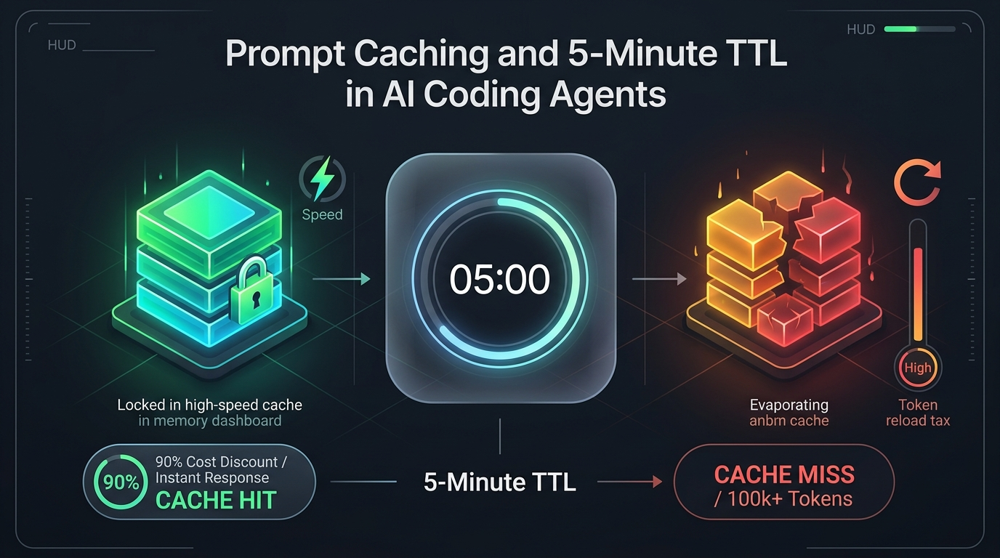
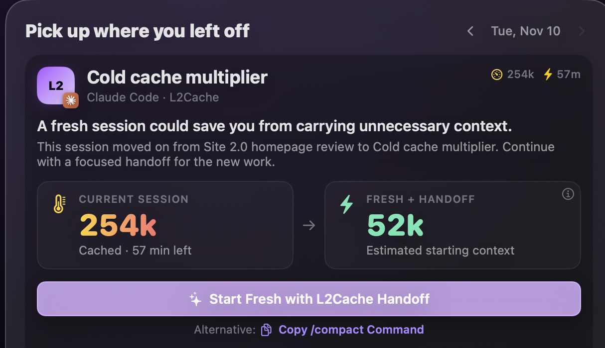

The Reddit mystery solved: why typing "one quick message" after a break burns through your rate limits, how prompt cache TTLs actually work, and the diagnostic prompt to audit your machine.

If you browse r/ClaudeAI or r/ClaudeCode on any given Wednesday, you’ll see the exact same developer lament repeated like clockwork:
"I hit my 5-hour limit at noon. I waited until 5:00 PM for the reset. I opened my terminal, sent one single prompt to continue, and 15 minutes later Claude Code told me I was locked out again until 10:00 PM!"
Or this one:
"I pay for a Pro/Team subscription. Why is my entire weekly quota wiped out by Wednesday afternoon when I only sent a handful of messages today?"
Developers instinctively blame Anthropic—assuming silent rate-limit nerfs or aggressive throttling. But in 95% of cases, the culprit is the exact same hidden mechanism: the cold session tax triggered by claude --resume.
Here is the 3-minute explanation of what’s happening, the levers to protect your limits, and a diagnostic prompt you can paste into Claude to audit your machine in 30 seconds.
---LLMs don't retain memory between turns. Every time you send a prompt, Claude Code re-sends your entire conversation history across the wire: your system instructions, project files, past tool outputs, compiler tracebacks, and your new message.
During active coding, this is dirt cheap because of Anthropic's prompt caching. Claude reads the unchanged history from cache at a 95% discount (costing just 0.05× of normal input on Sonnet and Opus).
The trap is the Cache Time-to-Live (TTL):
Every prompt resets the countdown. But the moment you step away for lunch, a meeting, or a coffee, the timer runs out and the cache expires.
---Running claude --resume loads the transcript from your local disk for free. No API call is made yet.
The penalty hits the second you hit Return on your next prompt.
Because the cache has expired, Anthropic cannot read from cache. It must re-read your entire 200,000+ token context from scratch and write it back into cache. On Sonnet 5.5 and Opus 5.5:
Now add the agent multiplier: in Claude Code, one prompt is almost never one request. When you ask Claude to *"fix the failing test in auth.py"*, it reads files, runs pytest, inspects the error, and edits code. That single prompt routinely triggers 5 to 10 sequential API calls.
Resuming a 200k session after lunch doesn't consume one prompt's worth of quota. It burns as much of your rate limit as 40 to 80 active messages in under two minutes.
---If you log in via claude login (linking your Claude subscription), your root conversation gets a 1-hour cache. But if you set export ANTHROPIC_API_KEY="...", Claude Code defaults to a 5-minute cache. On an API key, stepping away to grab water cools your cache completely.
When your subscription plan hits its standard allowance and dips into pay-as-you-go "Usage Credits", the cache TTL can silently drop from 1 hour down to 5 minutes. A short 10-minute break while on usage credits will force a full cold write at standard API prices.
Anthropic caching is strictly prefix-based. If Block 0 changes, 100% of downstream cache is invalidated. Two common habits destroy your cache:
CLAUDE.md or .claude/rules mid-session: These files sit at the top of the context. Editing them on turn 12 invalidates the entire cache immediately./model: Toggling between Sonnet and Opus resets model-specific caching, forcing a cold write.Running /compact while warm reads your history at a 95% discount. Running /compact after a break forces Claude to re-read 250k tokens at full price just to summarize them.
You can see exactly how much quota cold resumes have cost you. Open a terminal, start a fresh, clean Claude Code session, and paste this prompt:
Analyze my Claude Code history for cold-cache reloads and plan-limit burn.
Don't read transcript files directly into context: write and run a Python script locally, and never print message text.
Data source: all *.jsonl files under ~/.claude/projects.
Scan lines with "type": "assistant" that have message.usage, counting each message.id once.
For each assistant reply:
- context size = input_tokens + cache_creation_input_tokens + cache_read_input_tokens
- cache lifetime = 1 hour if the latest earlier reply in the same file that
wrote to the cache had cache_creation.ephemeral_1h_input_tokens > 0, otherwise 5 minutes
- it is a cold reload if the time gap since the previous reply in the same file exceeds that lifetime
Estimate cost relative to normal input (Anthropic weights):
- uncached input: 1x, output: 5x
- cache write: 2x (1-hour TTL) or 1.25x (5-minute TTL)
- cache read: 0.1x (or 0.05x for "opus" and "sonnet")
Report:
1. Total sessions scanned and date range.
2. Cold reload count: how many occurred above 100k tokens and above 200k tokens.
3. Limit Burn Share: what percentage of my total token usage was burned purely on cold cache re-warming vs. active work.
4. Top 5 Most Expensive Cold Resumes: session ID, project name, context size, model, break length, and how many warm turns of quota it consumed.
5. Time-away breakdown: under 2 hours (meetings/breaks), 2-8 hours (lunch/afternoon), >8 hours (overnight).
6. Diagnosis: what is the single biggest cause of my Claude Code limit burn?When we built L2Cache (a native macOS developer memory app), we realized that solving the cold session tax requires two complementary architectures: Hooks to protect the cache (Push), and MCP to retrieve past knowledge on demand (Pull).
Anthropic's CLI supports native lifecycle hooks. L2Cache installs lightweight, sub-5ms local hooks directly into your Claude Code environment:
SessionStart (on resume): When you run claude --resume, L2Cache inspects the local transcript timestamp against the model's TTL. If the cache expired and the session is over 100k tokens, it immediately displays a warning in your terminal with the reload penalty.UserPromptSubmit (the circuit breaker): If you send a message into a cold session, the hook halts the prompt before it ever reaches Anthropic's servers:
[L2Cache Guard] Cache is cold (245k tokens).
Resuming will trigger a full cache write (40x price penalty).
Options:
1. Type /clear to start fresh with an auto-injected handoff (recommended)
2. Press Enter again to proceed with full reloadSessionStart (on /clear): When you type /clear, the hook automatically extracts the previous session's active branch, touched files, open test errors, and architectural decisions, injecting them straight into the clean session's context. Your context drops from 250k to 15k tokens instantly—saving 90% of your limit without losing your train of thought.Why do developers keep 250,000-token sessions alive in the first place? Usually for one reason: fear that Claude will forget a subtle bug fix, an API quirk, or an architectural rule established 15 turns ago.
Carrying 250k tokens of history "just in case" forces you to pay for 250k tokens on every single message. It's the most expensive possible way to give an agent memory.
L2Cache replaces context stuffing with an embedded, 100% local Model Context Protocol (MCP) server. Claude Code starts lean, but has native MCP tools to query your Mac's history whenever it needs past context:
search_agent_history: Claude queries past turns, tool outputs, and commands across any project or session without needing past conversation history loaded into context.get_error_resolutions: When an Xcode build or test suite fails, Claude queries how you resolved that exact compiler or linker error two weeks ago, applying the fix in 1 turn instead of 10.get_recovery_point: Retrieves verified-good commit checkpoints and snapshot states.get_session_summary: Pulls concise summaries of yesterday's task or related branches.The Economics of Push vs. Pull: Pushing 250k tokens of conversation history on every turn costs 250,000 tokens on every prompt. Pulling a targeted error fix or architectural decision via MCP costs ~500 tokens, and only when the agent actually needs it.
If you prefer a visual HUD over terminal prompts, L2Cache’s Developer Home (⌃⌥H) gives you a native macOS Pickup Card for every active repository. Before you touch a key, it calculates exact tokens, countdown timers, and reload tradeoffs:
Cost Warning: Your next prompt will trigger a full 254k cache write (~$2.00 API equivalent / ~40 warm turns). Starting fresh with a handoff is 80% cheaper.
Last work: refactor(auth): resolve async deadlock in TokenValidator.swift

Long sessions aren't expensive because they're long. They're expensive every time they go cold.
If you want your $30 subscription to last through Friday: compact before you leave, don't resume 200k+ sessions cold, and use a handoff to start fresh after lunch.
L2Cache warns you before a cold resume reloads your context and offers a fresh start with a handoff.
Download L2Cache for Mac